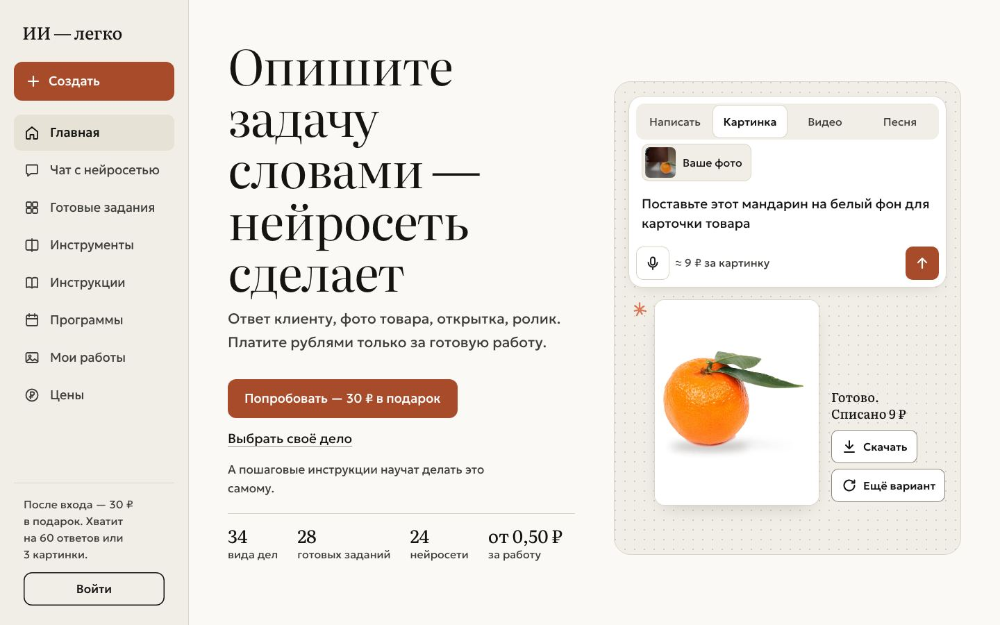
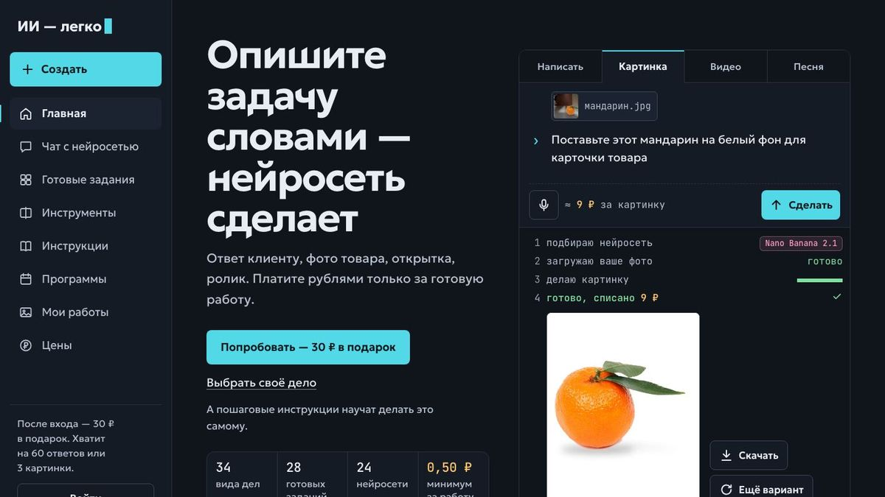
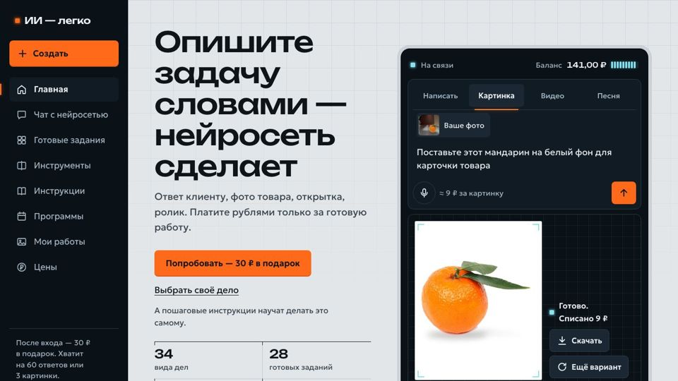
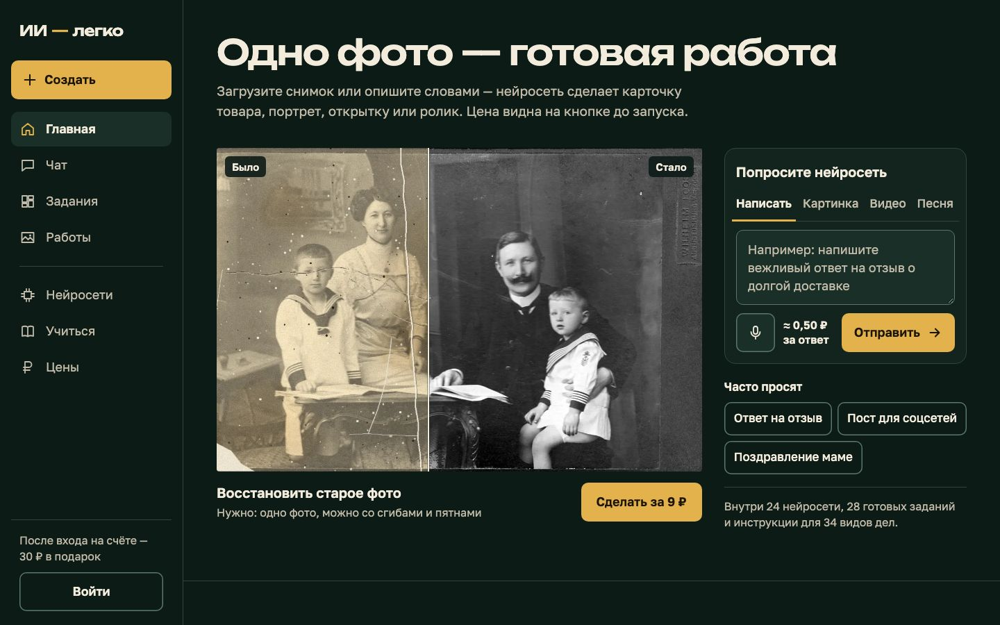
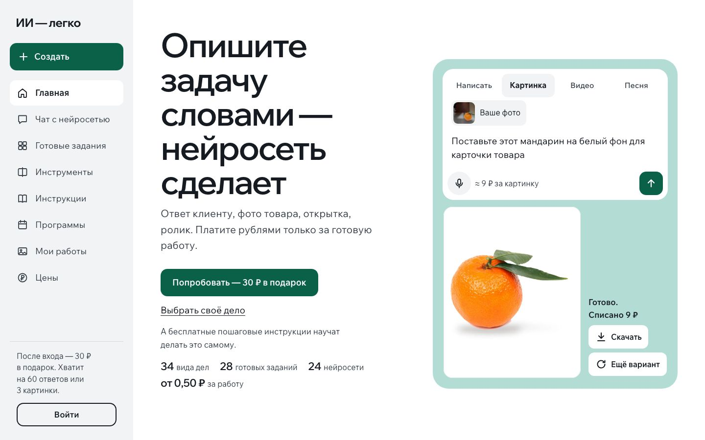
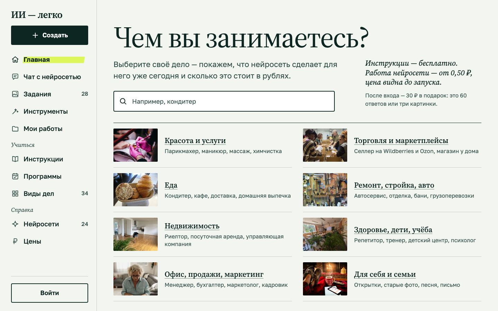

Варианты дизайна
Новые три варианта — на раскладке «Светлого продукта», которая вам понравилась, но в другой гамме. Ниже — прежние три для сравнения. Откройте с телефона и с компьютера главную и страницу «Нейросети для автосервиса».
Новые: раскладка «Светлого продукта»

D. Как Claude
Тёплая бумага, чернила и коралловый акцент, заголовки с засечками — сдержанно и «умно».
ГлавнаяАвтосервис

Прежние варианты


B. Светлый продукт
Светлый и воздушный, у каждой ниши свой цвет — как Apple, Notion, Canva.
ГлавнаяАвтосервис